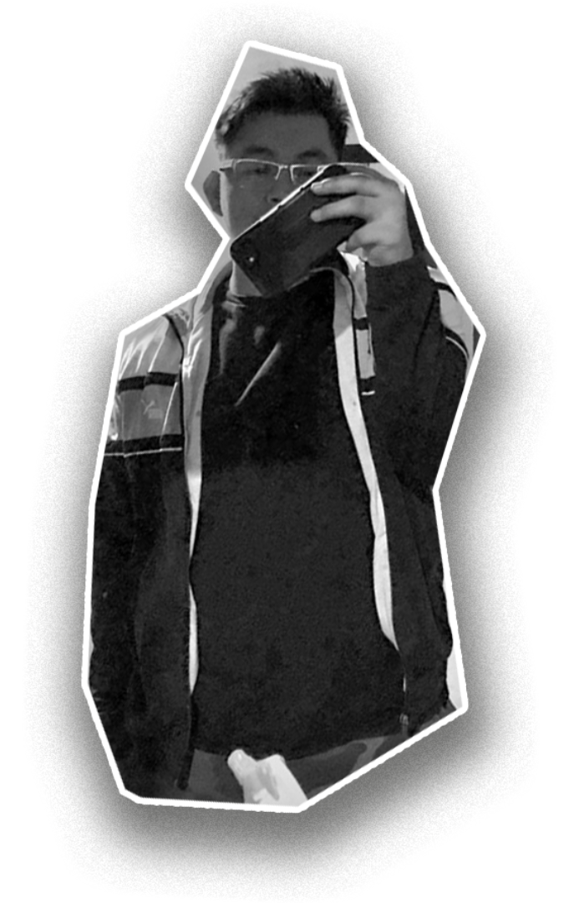

Lobato de los Santos Gary Jeneries
 Tranquilo y curioso por naturaleza; Estudiante de Diseño Gráfico con interés en ilustración y creación de marcas.
Enfoque principal:
- Diseño de identidad visual para marcas
- Ilustración tradicional y digital
- Técnicas manuales con diferentes papeles y materiales
- Dibujo artístico y conceptual
- Creación de maquetas físicas
- Animación cuadro por cuadro
- Modelado 3D básico
Mi estilo:
Prefiero diseños dinámicos y poco convencionales. Me gusta combinar colores intensos, formas inesperadas y texturas para crear resultados únicos.
Objetivo actual:
Aprender a balancear la creatividad espontánea con las necesidades prácticas del diseño, mientras completo mi formación académica.